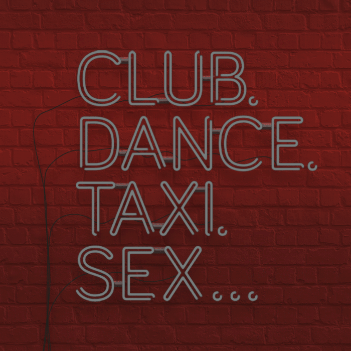
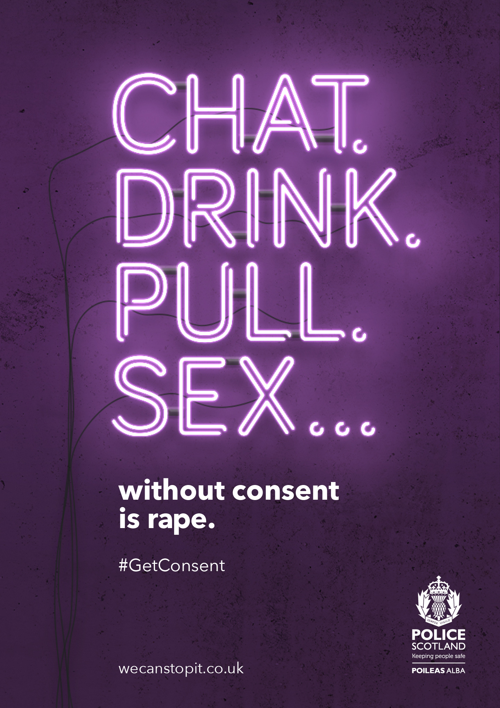
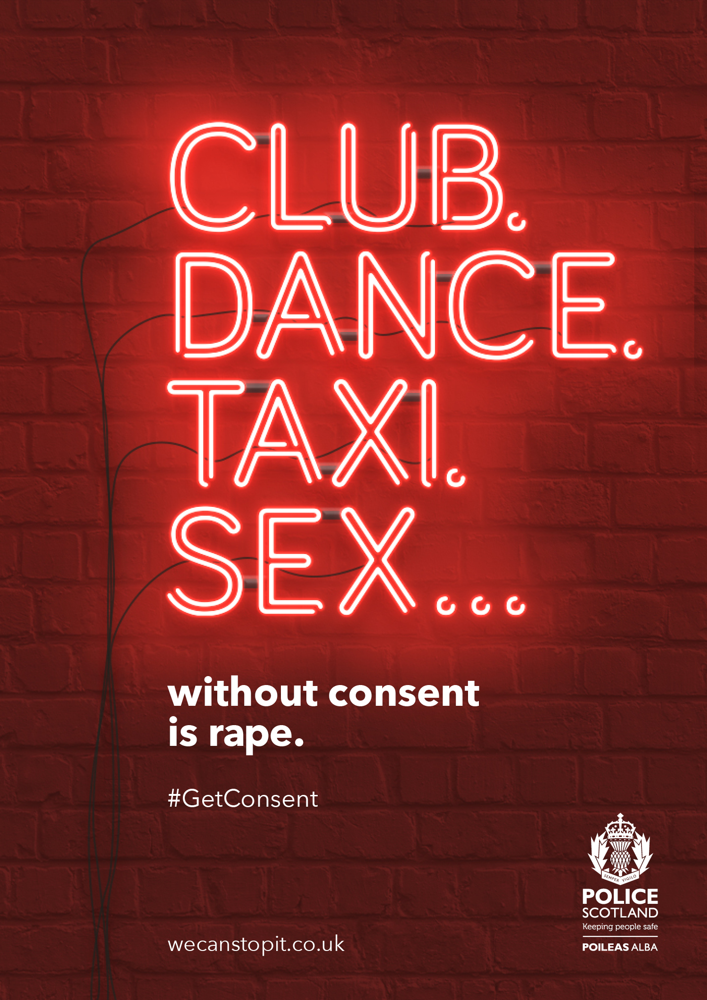
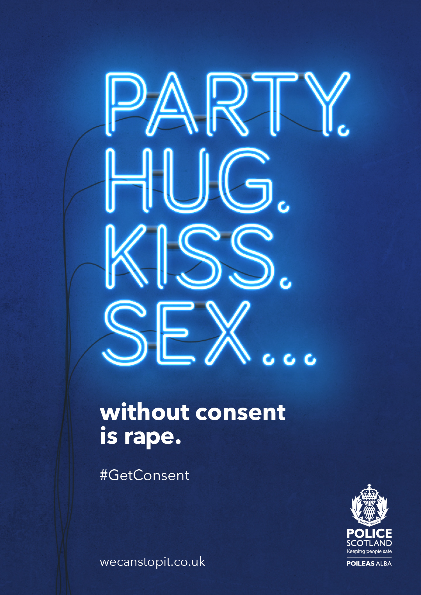
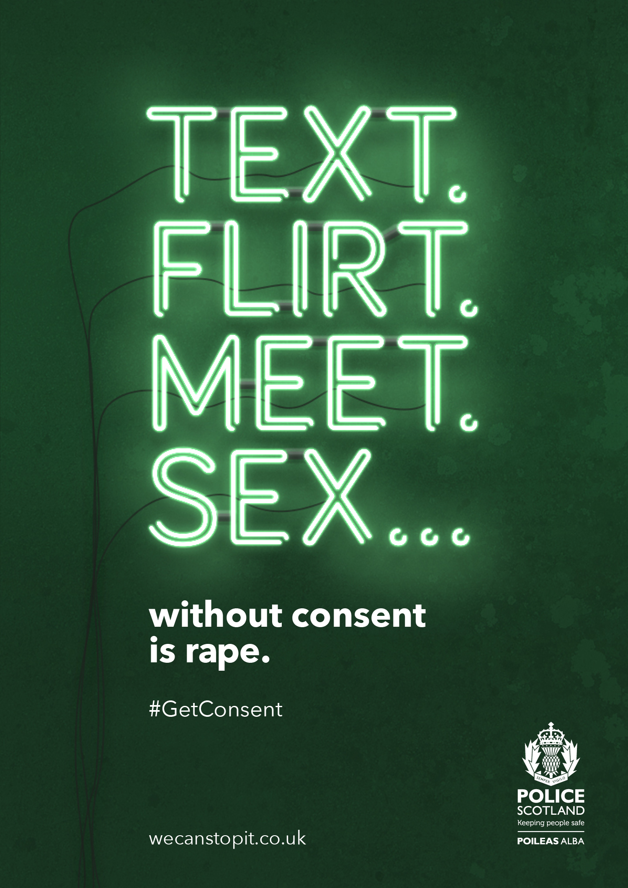
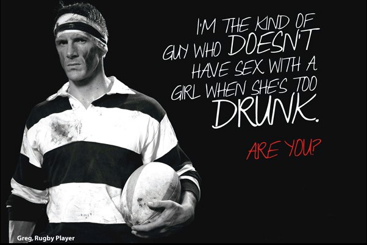
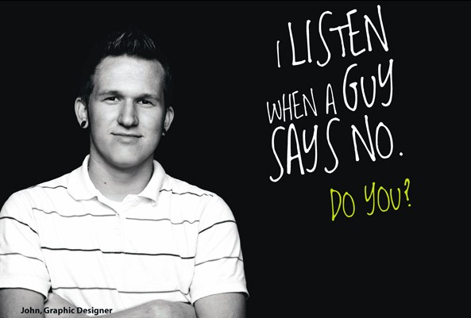
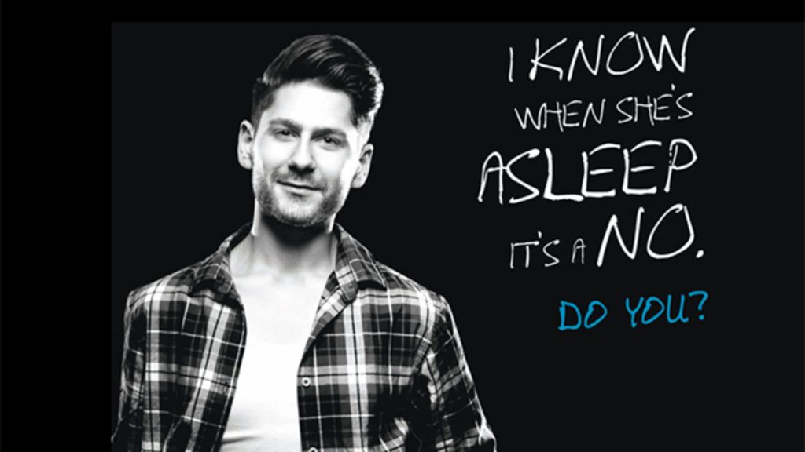

A sexual consent awareness campaign that reached 401,251 people in four weeks, generated national BBC and Guardian coverage, and was adopted nationwide by Police Scotland.
My role was creative communication development and campaign messaging, aligned with the media strategy to ensure clarity, reach and public discussion. This meant writing the copy that carried the campaign's central argument, and ensuring that argument was both unambiguous and impossible to dismiss.
Sexual assault prevention campaigns have historically been directed at potential victims: advice on how to dress, where to go, who to trust, how to leave. The implicit message being that safety is the responsibility of the person at risk.
Research conducted by Police Scotland identified a different and more uncomfortable gap: many young men did not clearly recognise that sex without explicit consent constitutes rape. This was not a knowledge gap about the law. It was a recognition gap about everyday situations.
"The campaign needed to shift the conversation from victim precaution to bystander responsibility."
The challenge was to address this without alienating the audience the campaign most needed to reach. An accusatory tone would cause disengagement. A preachy tone would be ignored. The message needed to travel through peer networks, not around them.
The strategic reframe was the campaign's most important decision. Rather than addressing men as potential offenders, the communication positioned them as agents of prevention. The "we" in #WeCanStopIt was deliberate — collective, inclusive, social.
Prevention was framed as a social norm held by the majority, not a rule imposed by authority. The campaign borrowed the language and visual logic of peer communication rather than institutional messaging, making it shareable, discussable and credible within the networks it needed to reach.
The central line was written to be unambiguous. No euphemism. No softening. No room for misreading. The clarity of the language was the strategy — if the message could be misread, it could be ignored.
The campaign ran two visual systems simultaneously. The neon poster series used everyday social scenarios — Club. Dance. Taxi. Sex — to name the exact contexts where consent is misread or ignored. Each poster ended with the same unambiguous statement. The peer portrait series put real-looking men on camera with direct first-person pledges, normalising the behaviour the campaign was trying to spread.





The peer portrait series placed real-looking men — identified by name and occupation — in direct address to the viewer. Each portrait carried a first-person pledge rather than a third-person instruction. The question "Are you?" or "Do you?" at the end of each creative transferred the message from statement to social invitation.


